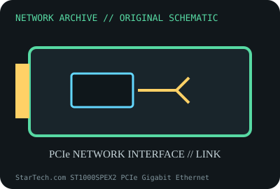

[ MODEL-SPECIFIC NETWORK HARDWARE ]
StarTech.com ST1000SPEX2 PCIe Gigabit Ethernet Adapter
Single-port PCIe Gigabit Ethernet card for desktop hosts. Confirm exact product label and revision before applying specifications.

IDENTIFICATION: Confirm manufacturer PID, hardware revision, device ID or module suffix. Nominal standards/link rates are not measurements of payload performance.
Exact specifications and compatibility
| Dedicated subcategory | Ethernet adapters |
|---|---|
| Exact product/model | StarTech.com ST1000SPEX2 PCIe Gigabit Ethernet Adapter |
| Bus, ports and physical interface | PCIe x1; one RJ-45 10/100/1000BASE-T port. |
| PHY, radio or protocol | 10/100/1000BASE-T copper PHY; exact controller stepping should be identified from the installed board/device ID. |
| Nominal rate (not measured) | Maximum 1Gb/s nominal line rate; not a benchmark result. |
| Measured throughput | No measured benchmark is claimed for a physical specimen. A valid result must record host/peer, link partner, media/cable, driver/firmware, traffic pattern, test tool and duration. |
| Drivers, OS and firmware | StarTech provides driver/download support for supported Windows releases; Linux in-kernel driver depends on the card’s controller revision. |
| Compatibility | PCIe x1 and Cat 5e-or-better copper cabling at Gigabit rate; fit bracket to chassis height. |
| Variant warning | ST1000SPEX2 is not USB Ethernet, PCI-X or the ST1000SPEX2L low-profile bundle; controller/device ID can vary by production run. Verify label/VID:PID. |
Model and revision notes
ST1000SPEX2 is not USB Ethernet, PCI-X or the ST1000SPEX2L low-profile bundle; controller/device ID can vary by production run. Verify label/VID:PID.
StarTech provides driver/download support for supported Windows releases; Linux in-kernel driver depends on the card’s controller revision.
PCIe x1 and Cat 5e-or-better copper cabling at Gigabit rate; fit bracket to chassis height.
Archival, ESD and preservation notes
Record PCB revision, PCI IDs, MAC and driver. Keep bracket/screws with card and store antistatically.
Document source URL, access date, document revision and specimen label/condition. Preserve without credentials or private configuration.
Primary manufacturer and standards sources
- StarTech ST1000SPEX2 product detailsPrimary manufacturer or standards documentation; verify exact SKU and host revision.
- StarTech support and driver downloadsPrimary manufacturer or standards documentation; verify exact SKU and host revision.
- IEEE 802.3 Ethernet standardsPrimary manufacturer or standards documentation; verify exact SKU and host revision.
Manufacturer statements cover the named part or its documented product family; the exact labeled revision and vendor compatibility list take precedence.